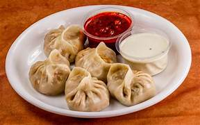

A popular Bengali sweet made from ball-shaped dumplings of chhena (Indian cottage cheese) and semolina, cooked in light sugar syrup. Known for its spongy texture and juicy sweetness.

Momos
A popular snack in the northeastern states like Sikkim and Assam, momos are steamed dumplings filled with vegetables, chicken, or pork, and served with a spicy dipping sauce.

A popular dish in the northeastern states, bamboo shoots are stir-fried with spices, garlic, and sometimes pork or chicken.